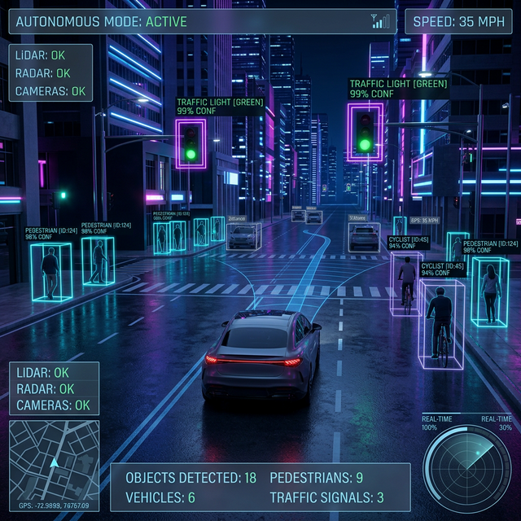
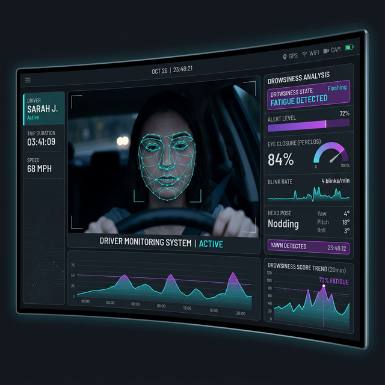

I'm a passionate Computer Engineering student currently studying at Khwopa College of Engineering, Bhaktapur. My academic journey has driven me to explore the wildest frontiers of technology, with a heavy focus on Artificial Intelligence, Autonomous Systems, and Computer Vision.
I genuinely love taking on tricky problems and building systems that can actually perceive, learn, and make intelligent decisions on their own. Whether it's training an agent to navigate a complex environment or conceptualizing real-time object detection models, I'm dedicated to leveraging cutting-edge AI to build solutions that actually matter.

I built a fully functional 3D autonomous vehicle simulation from scratch in Unity. By wiring up YOLO for real-time traffic detection and OpenCV for lane tracking, I taught an AI to navigate complex environments and communicate constantly with a backend Python node.

I designed a real-time computer vision system specifically to prevent accidents caused by driver fatigue. It actively monitors facial landmarks and eye closures using an optimized YOLO model, instantly triggering safety alerts the moment someone starts to doze off behind the wheel.
Explore my entire portfolio of experiments, utility scripts, and main projects on GitHub.
Visit My GitHubEnrolled at Khwopa College of Engineering, Bhaktapur. Began foundational studies in programming, algorithms, and logical design.
I started exploring the world of data science, mastering Python, Pandas, and Scikit-learn to build my first real regression and classification models.
I tackled deep reinforcement learning head-on, successfully building and training an AI to navigate a robust 3D driving simulation entirely on its own.
I took my computer vision skills to the next level by building an optimized YOLO pipeline designed specifically to meet strict, safety-critical real-time performance constraints.